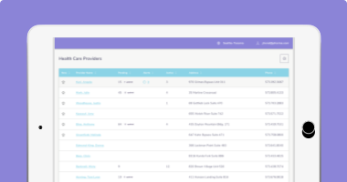
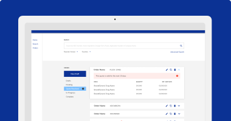
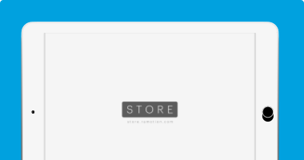

Dane Wesolko
Turning thoughts into things
Case studies
-

Helping patients get the medicine they need
How can we help sales representatives more effectively close cases, physicians write scripts and provide patients with the medicine they need?
View case study -

Reinventing the comparator sourcing industry
How can we make it easier to develop supply strategies, forecast risk, gain real-time market intelligence and procure comparator drugs for clinical trials?
View case study -

Accessing insight from real-world evidence
How can we provide users with access to European real-world evidence and expand a company's product portfolio?
View case study
Let's work together
I'm open to working with small teams in Healthcare and Life Sciences turn thoughts into things.
Contact